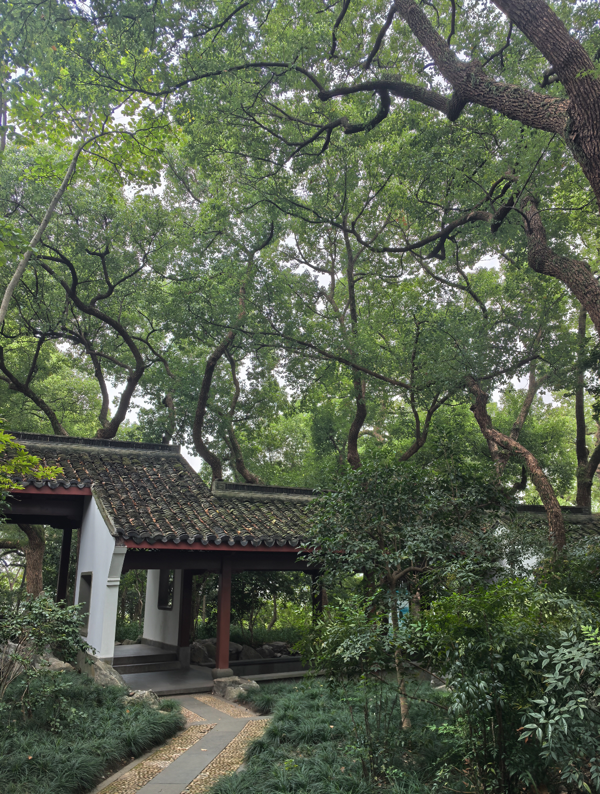
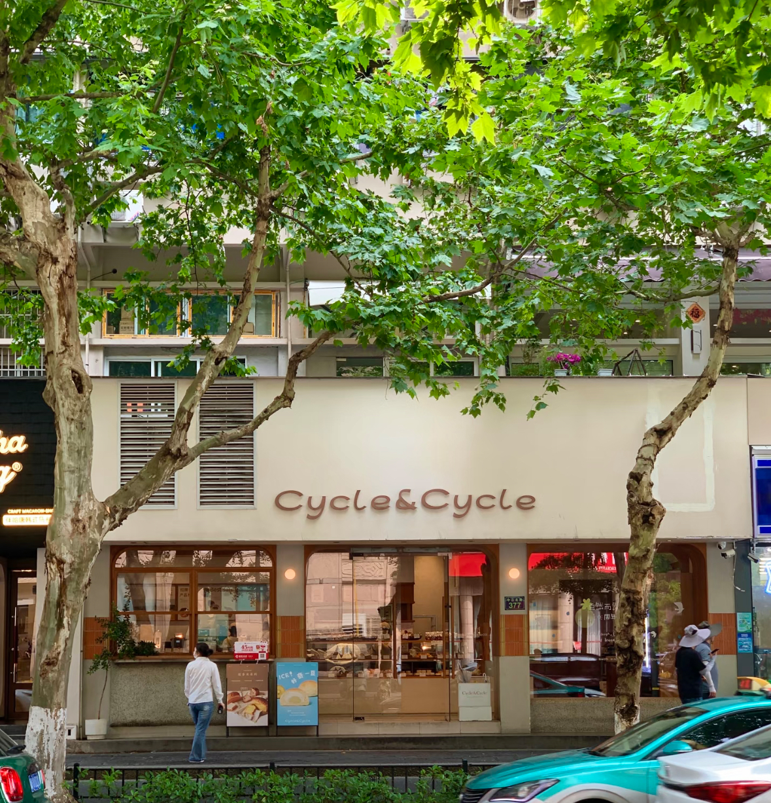
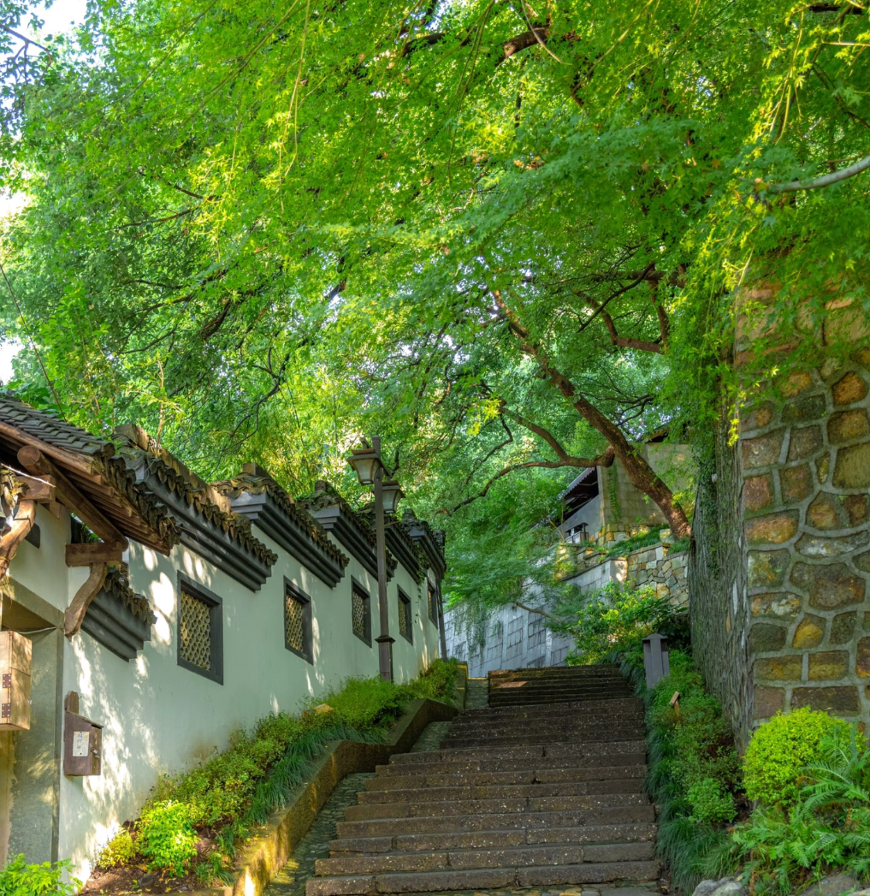
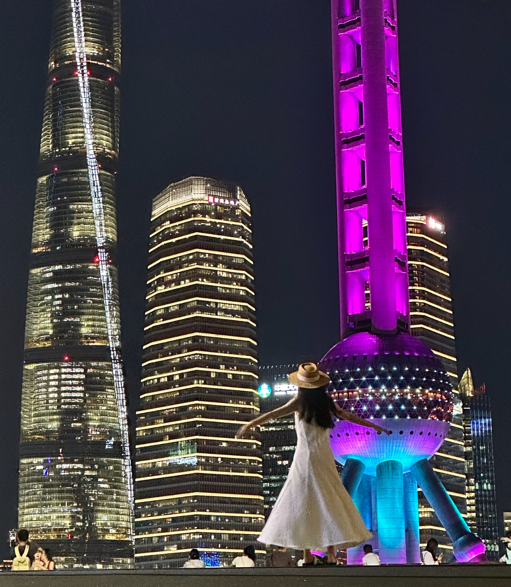

点点
镜点号：123456789
编辑主页
我是点点，陪你寻找城市好机位...
4
发布
79
获赞
85
关注
243
粉丝
我的打卡
浏览历史
草稿箱
机位
笔记
点赞
喜欢
收藏

晓霞弄-小巷文字墙及望仙阁

西湖景区-白堤湖边长椅

西湖景区-柳浪闻莺石拱桥

西湖景区-曲院风荷鱼缸

246
竟然在杭州拍到了重庆同款山城巷
点点
267

128
为了拍这个人生照片，我特意来了一趟杭州
点点
176
189
西湖边的小众机位，人少景美
点点
156

542
第一个发明这个机位的人是天才吧
点点
312

除了西湖，会带每个来杭州的朋友来这citywalk
267

逛西湖想拍出神图，就看这篇机位
238

杭州六和塔有什么魔力，怎么一来就出片
176

中山北路这条街就有这么好逛吗？
312

建议码住这个路线，不管怎么拍都出片

上海外滩必拍的五个机位！附上定位
来西湖不要错过这个机位，世界第一忧郁诞生
755

周末想远离城市喧嚣，就来这里走走吧
建议码住这个路线，不管怎么拍都出片
上海外滩必拍的五个机位！附上定位
来西湖不要错过这个机位，世界第一忧郁诞生
755
周末想远离城市喧嚣，就来这里走走吧